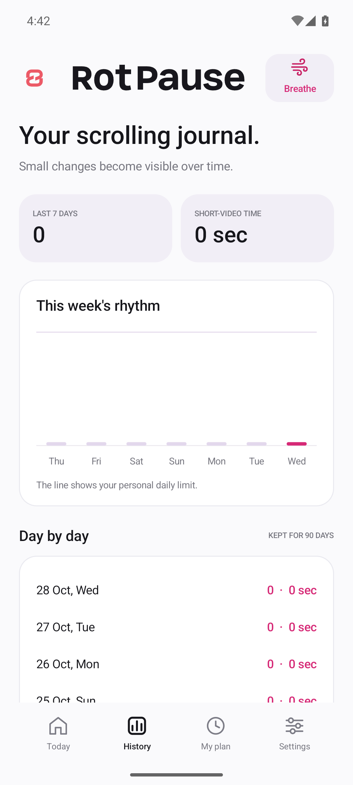

Quick skips?Counted separately.
Your pattern. Your perspective.01 / NOTICESee the scroll.
See the scroll.
Not just the clock.
A video qualifies after 0.75 seconds of stable detected visibility. Detected faster skips have their own total. See your daily pattern and the last seven days in one place.
How the counter worksCounts are estimates based on detectable screens, not official platform view statistics.